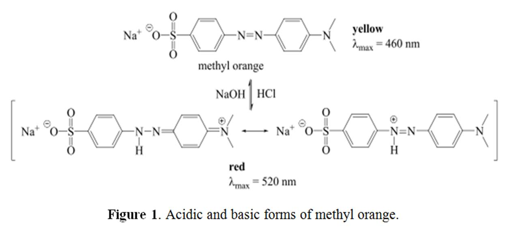
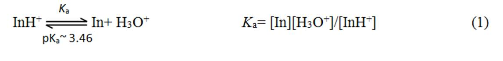
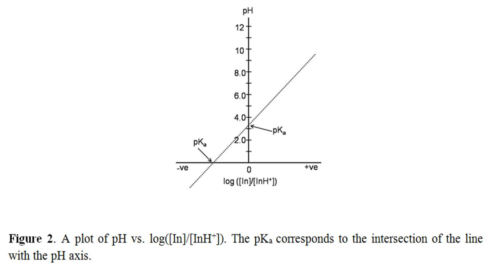

Chemical Sciences →ABSORPTION SPECTROSCOPY VIRTUAL LAB →List Of Experiments
Effects of solution pH on the UV-visible absorption spectra
If a molecule has an acid/base character, change in the pH of the solution may have an important effect on the absorption spectra of the molecule. The pH or H+ ion concentration affects the conjugate acid-base pair chemical equilibriums. Thus pH change in a solution can lead to the change in the number and kinds of species (molecules or ions) present in a solution. Let us take example of methyl orange. Methyl orange is an azo dye (R N=N Rꞌ) (Figure 1) where electrons from N=N double bond and neighboring aryl groups constitute the chromophore that causes yellow color. Methyl orange acts as a weak base and gets protonated in highly acidic solution. The proton binds to one of the nitrogen in the N=N double bond which breaks the double bond. This leads to the electron/bond arrangement in the molecule. Thus, the molecular structure and the chromophore of the standard methyl orange change in acidic medium which give rise to red color in the solution.

For convenience let us represent methyl orange as “In” and write the above ionic equilibrium as follows:

where Ka is the acid dissociation constant. Acid-base indicators which are weak acids or bases do not undergo complete dissociation and exhibit this kind of dissociation equilibrium. The equilibrium can be driven backward or forward by varying the H3O+ ion concentration in the solution.
In practice, pH and pKa are often used in place of the H3O+ ion concentration and Ka respectively. Therefore, by taking negative of logarithm, one can write from equation (1),
pKa = pH – log ([In]/[InH+]) (2)
or, pH = pKa + log ([In]/[InH+]) (3)
where ‘[ ]’ represents the concentration of the enclosed species. Eq (3) suggests that p Ka value can be calculated if the concentrations of conjugate acid and base pair at a given pH are known. Mathematically eq. (3) is a straight line equation (y= c + mx) with intercept = pKa if pH is plotted against log ([In]/[InH+]). In other words, when log ([In]/[InH+]) = 0, i.e., at [In] = [InH+], pH = pKa. Thus, pKa is conveniently determined graphically by determining the ratio [In]/[InH+] as a function pH (Figure 2).

Both the standard and protonated forms of methyl orange are colored species; therefore their concentrations can be conveniently determined by measuring the absorbances at their wavelengths of maximum absorptions with the help of a spectrophotometer. This allows spectrophotometric determination of pKa in the case of methyl orange. According to the Beer-Lambert Law, the amount of light absorbed by a solute at a given wavelength is proportional to its molar concentration:
A = εcl, where A = absorbance, ε = molar absorptivity (a constant) characteristic of the absorbing molecule, l = path length of light absorption, c = concentration of the light absorbing molecule. In a mixture, the absorbance of two absorbing species, InH+ and In, at a particular wavelength is the sum of the absorbances of InH+ and In at that wavelength. The concentrations of InH+ and In in the mixture can be determined by measuring the absorbance of the mixture at two different wavelengths (say, λ1 and λ2) and by obtaining the molar absorptivities (via calibration curves) for both components at both wavelengths. Generally, the wavelengths are chosen so that the ratios between the absorbances of the two species, AInH+/AIn, are maximized and minimized. Thus one can construct two independent equations containing two unknowns, [InH+] and [In].
A(λ1) = AInH+ (λ1) + AIn (λ1) = εInH+ (λ1) [InH+] + εIn(λ1) [In] (4)
A(λ2) = AInH+ (λ2) + AIn (λ2) = εInH+ (λ2) [InH+] + εIn(λ2) [In] (5)
where εInH+ (λi) and εIn(λi) are the molar absorptivities of InH+ and In, respectively, at λi for unit path length. One can determine [InH+] and [In] by solving the above two equations. However, to use this method one requires multi-wavelength absorbance measurements at different pH values for mixture as well as for individual species. This method is especially required if acid-base equilibriums comprise more than two ionization steps. Multi-wavelength absorbance measurements for mixture and individual species can be avoided for systems having single ionization step as in eq. (1).
Examination of eq. (3) shows that one requires to determine the ratio [In]/[InH+] as a function pH, not the individual species concentration. Since constant quantity of methyl orange indicator is used at all pH values, the total concentration of indicator is given by CT = [In] b = [InH+]a = [In] + [InH+], where [In] b = concentration of only In (base form of indicator) present at high pH, and [InH+]a= concentration of only InH+ (acid form of indicator) present at low pH. The relative quantities of In and InH+ varies between the above two extremes depending on the pH of the solution. If one measures the absorbance values for the two extreme conditions (for [In]b and [InH+]a) at a given wavelength, all other absorbance values lie between them. This allows one to determine the relative amount of each species present at all pH values. The best choice for the wavelength of absorbance measurement is that which has the largest difference in absorbance for the two species. In the case of methyl orange indicator system, the wavelength at which this is observed is λmax for InH+ (say, InH+λmax ≈ 510 nm). Suppose at this InH+λmax:
Aa = absorbance for [InH+]a
Ab = absorbance for [In] b
A = absorbance for any intermediate pH values
Under these conditions,
A = Aa× [InH+]/CT + Ab× [In]/CT (6)
The above relationship can be rearranged to find the ratio, [In]/[InH+], at InH+λmax as follows:
[In]/[InH+] = (Aa –A)/(A – Ab) (7)
Therefore, the experiment turns out to be adjusting [H3O+] or pH to known values including two extremes and measuring corresponding absorbance values for determining the ratio [In]/[InH+] spectrophotometrically. The pH of the experimental solutions is commonly varied by using a buffer system. Disodium hydrogen orthophosphate (Na2HPO4)-citric acid buffer system can be used for methyl orange indicator system. Ideally, the buffer components should not absorb any light in the wavelength range of interest. The following points should be noted. The relative concentrations of buffer components control the solution pH and the solution pH controls the relative concentrations of indicator species, InH+ and In. The dissociation equilibrium constant (Ka) measured in the present spectrophotometric method is “concentration equilibrium constant”, because concentrations instead of “activity” terms are used for the determinations. Ka and hence pKa values, like other equilibrium constants, are temperature dependent.